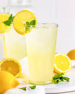

Lemonade

Ingredients
- 1 cup white sugar
- 1 cup water
- 9 medium lemons
- 7 cups ice cold water
- ice
Steps
- Combine sugar and 1 cup of water in a small saucepan. Stir to dissolve sugar while mixture comes to a boil. Set aside to cool
- Cut the lemon into half and squeeze into a measuring cup. Discard any seeds. Continue to juice until you have 1 1/2 cups of fresh juice
- Pour 7 cups ice cold water into a pitcher. Stir in lemon juice and pulp, then add the syrup cooked to taste